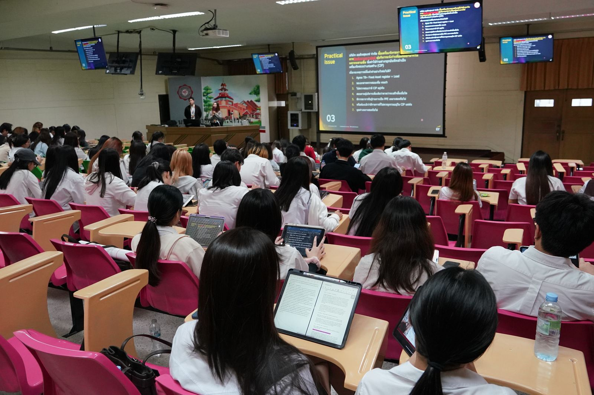

Academics & Research
Academics & Research
วิชาการและวิจัย
มาตรฐานการเรียนการสอน การประกันคุณภาพ ความร่วมมือทางวิชาการ และข้อมูลสำหรับการวางแผนการศึกษา
Overview
What We Do
งานวิชาการของคณะ
คณะดูแลคุณภาพการเรียนการสอนผ่านสามเสาหลัก — การรับรองสมรรถนะอาจารย์ การประกันคุณภาพตามเกณฑ์สากล และเครือข่ายความร่วมมือกับหน่วยงานภายนอก
Teaching Competency
การรับรองสมรรถนะอาจารย์
อาจารย์และบุคลากรได้รับการรับรองตามกรอบมาตรฐานวิชาชีพของสหราชอาณาจักรแล้ว 31 คน
ดูรายละเอียด QAQuality Assurance
ประกันคุณภาพการศึกษา
ประเมินคุณภาพสามระดับ TQF · EdPEx · AUN-QA
ระบบประกันคุณภาพ MOUAcademic Collaboration
ความร่วมมือทางวิชาการ
ข้อตกลงกับสถาบันการศึกษา หน่วยงานรัฐ และภาคเอกชน ทั้งในและต่างประเทศ
ดูรายชื่อพันธมิตร 2569Academic Calendar
ปฏิทินการศึกษา
กำหนดการเปิด-ปิดภาคเรียน ลงทะเบียน และสอบ ทุกระดับการศึกษา
เปิดปฏิทินTeaching Competency Recognition
UK Professional Standards Framework
การรับรองสมรรถนะอาจารย์ UKPSF
31บุคลากรที่ได้รับการรับรอง
-
1
Senior Fellow
SFHEAผู้นำด้านการเรียนการสอนที่มีผลต่อผู้อื่นในวงกว้าง
-
29
Fellow
FHEAอาจารย์ที่รับผิดชอบการสอนและสนับสนุนการเรียนรู้อย่างเต็มรูปแบบ
-
1
Associate Fellow
AFHEAบุคลากรที่สนับสนุนการเรียนการสอนและการเรียนรู้ของผู้เรียน
Institutional Ranking
SCImago Institutions Rankings
อันดับมหาวิทยาลัยศรีนครินทรวิโรฒ
SCImago จัดอันดับสถาบันจากผลงานวิจัย นวัตกรรม และผลกระทบต่อสังคม การ์ดนี้แสดงอันดับล่าสุดของมหาวิทยาลัยศรีนครินทรวิโรฒ และอัปเดตอัตโนมัติจาก SCImago
- Researchผลงานวิจัย
- Innovationนวัตกรรม
- Societalผลกระทบต่อสังคม
External Resources
Systems & Resources
ระบบและเอกสารที่เกี่ยวข้อง
ลิงก์ทั้งหมดเปิดในแท็บใหม่